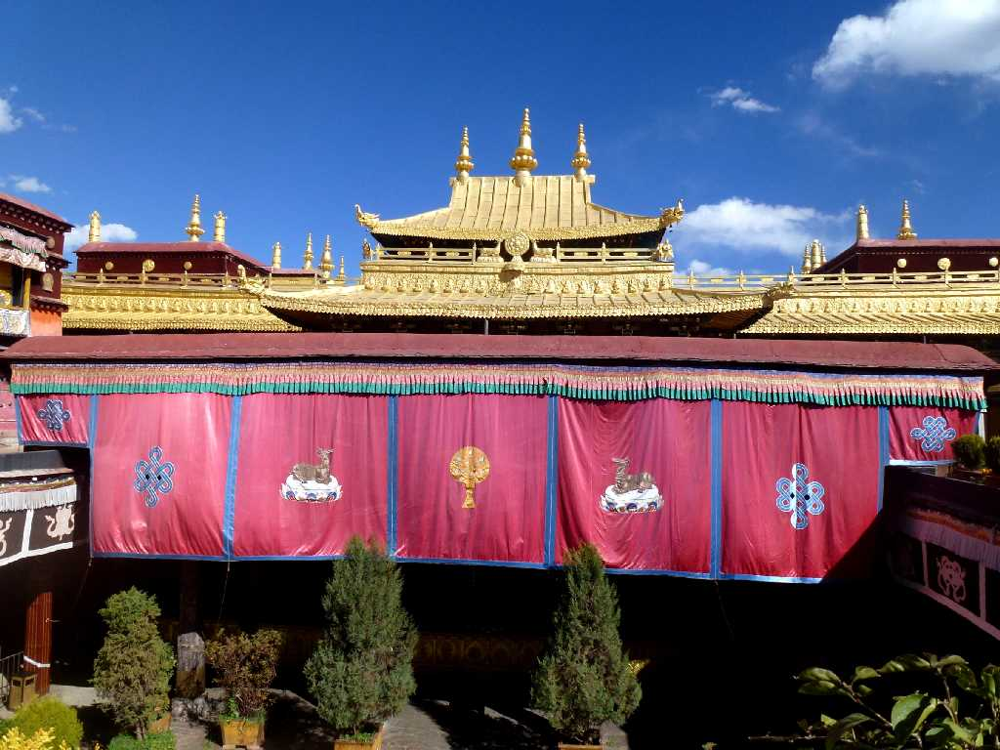
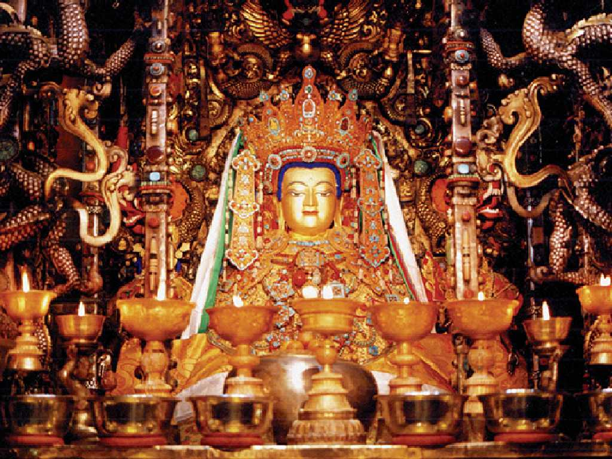
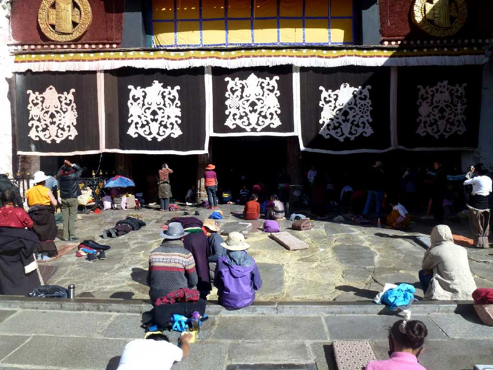
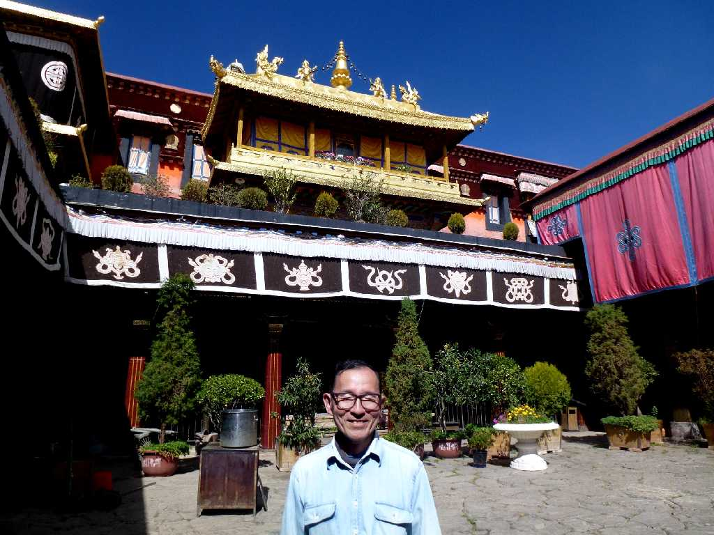

Jokhang Temple Lhasa Tibet 西藏 拉萨 大昭寺
チベット仏教の総本山 チベット初の統一王国を樹立し仏教を導入したソンツェン･ガンポ王の死に伴い王妃が亡き王を弔うために７世紀頃創られたジョカン寺

Sakyamuni Jokhang Temple 大昭寺 释迦牟尼像
本尊の釈迦牟尼菩薩 菩薩像の前ではダライラマの選出等重要なチベット仏教の儀式が行われる

Jokhang Temple 大昭寺
チベット各地から巡礼に訪れ仏教において最も丁寧な礼拝方法の一つとされる五体投地でお参りをする信者達

October 21 2014 Jokhang Temple 大昭寺